Assessing and interpreting perceived park accessibility, usability and attractiveness through texts and images from social media
Understanding public perceptions of urban parks is essential for their effective management. While conventional survey methods are resource-intensive, Social Media Data (SMD) offers a cost-effective alternative to gathering public insights. However, using SMD for park perception assessment remains challenges, particularly in integrating text and image analysis and filtering irrelevant content to identify influencing factors across various dimensions. Based on a manually curated dataset, this study introduces the Park Dual-modal Perception (PDP) model, a cutting-edge approach combining SMD text and image analysis to evaluate perceived park accessibility, usability, and attractiveness with an average accuracy of 86.81%, outperforming the commonly used BERT model by 8.26%. Utilizing SMD from 130 parks in Guangzhou, the model effectively quantifies the three dimensions, generating visual scoring maps to identify parks with lower perceived scores at the urban scale. Further incorporation of SHapley Additive exPlanations (SHAP) within the PDP model filters 82.79% of irrelevant words and extracts 158 thematic words and 954 associated words, providing targeted suggestions for park improvements. Our findings indicate that (1) factors such as distance, travel time, ticket prices, and proximity to commercial amenities critically influence park accessibility. (2) Park usability hinges on park’s ability to serve diverse groups and provide well-maintained, multifunctional facilities. (3) Park attractiveness is closely linked with the cultural and regulatory characteristics of ecosystem services. Our methodology combines assessment and interpretation of public perceptions at both city and park scales. It aids decision-makers in identifying low-rated parks and understanding the underlying reasons, thereby facilitating more informed urban planning decisions.
主要图表 | Main Figures and Tables
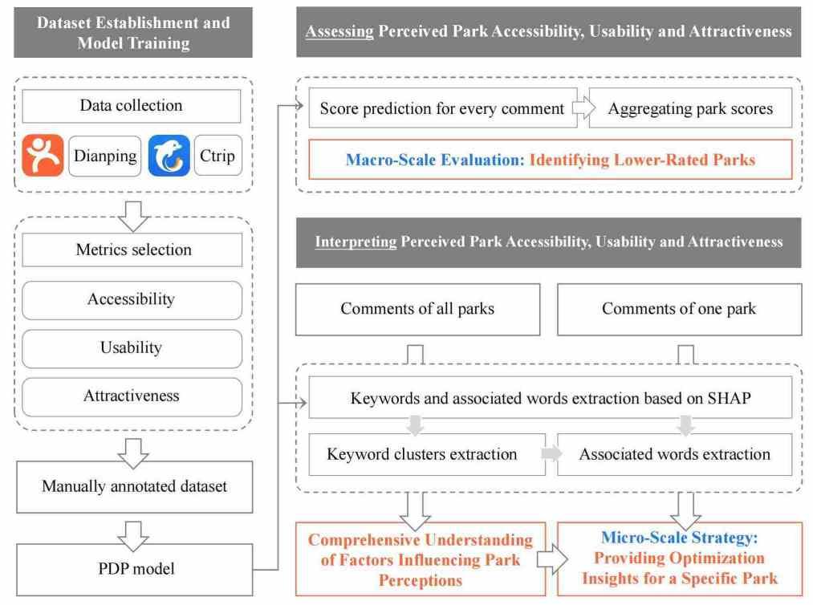
Figure 1
Research framework.
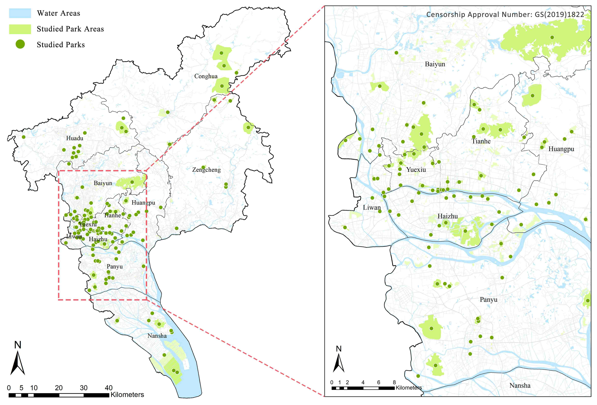
Figure 2
Study area and geographical spatial distribution of the studied parks.
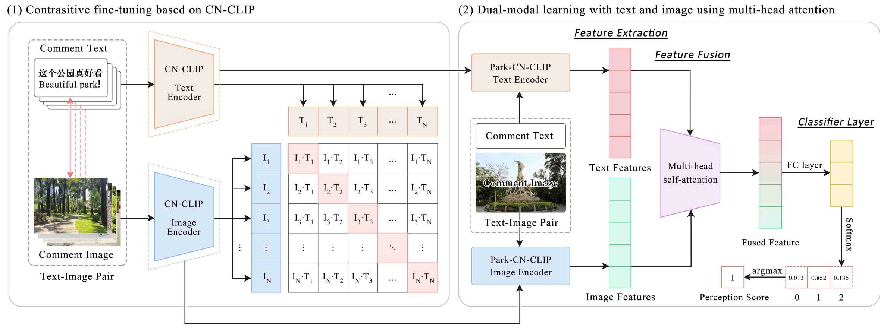
Figure 3
Structure of the PDP model.
Table 2
Overview of data distribution.
This park perception dataset is avaliable at: https://ars.els-cdn.com/content/image/1-s2.0-S2210670724009053-mmc1.xlsx
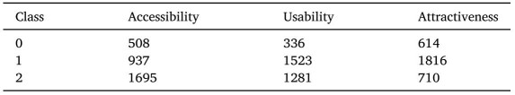
Table 3
ACC of different models.
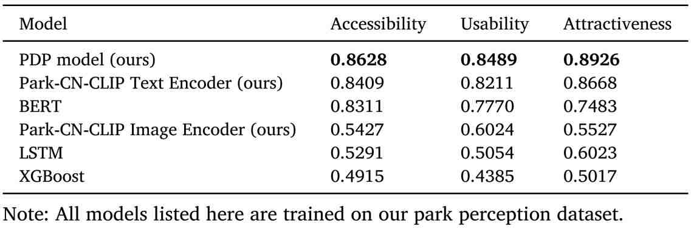
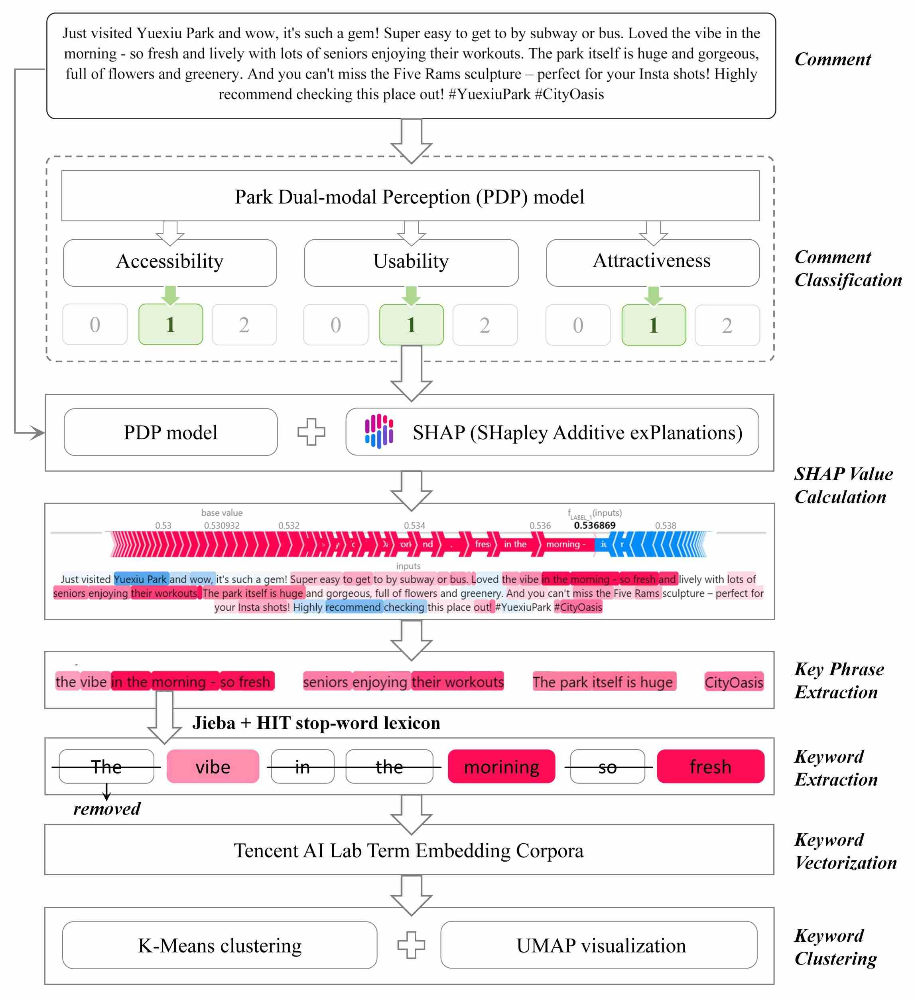
Figure 4
Interpretation procedure of integrating SHAP within the PDP model. Usability is presented as an example to show the steps after “SHAP Value Calculation”. The same procedure applies to the other two dimensions.
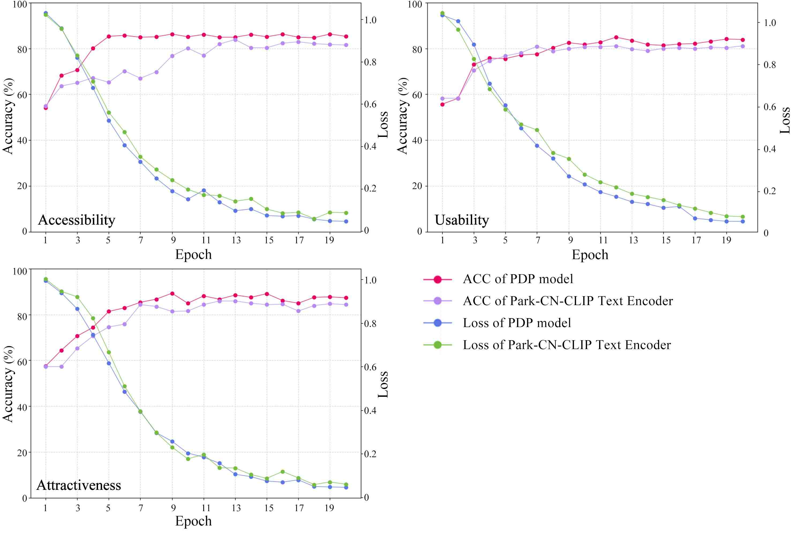
Figure 5
Training curves of the accuracy and loss on the test set regarding 2 models.
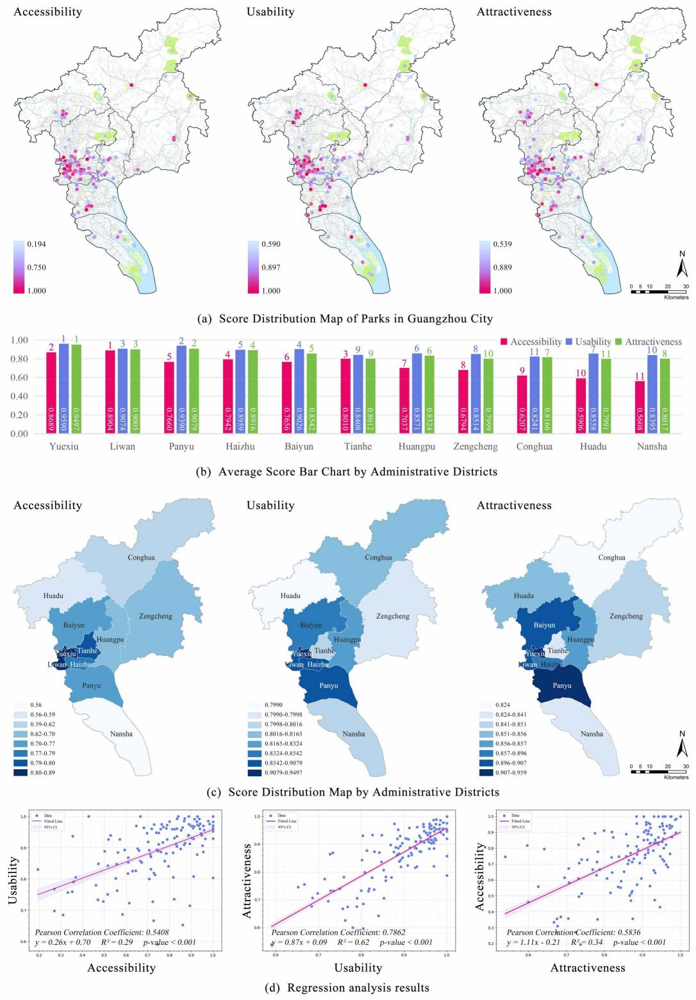
Figure 6
The measurement results within the case study area. (a) Aggregating score for every park. (b, c) Average scores by administrative district. (d) Regression analysis results.
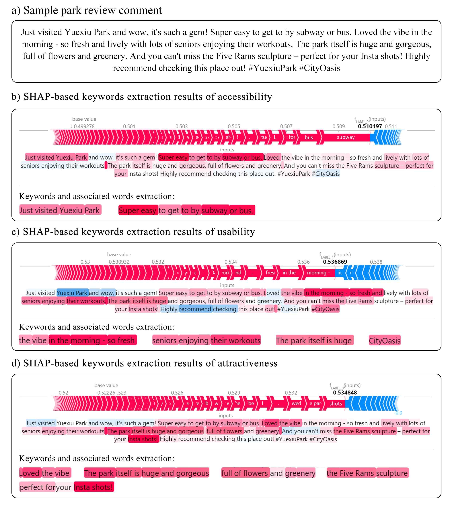
Figure 7
An example of SHAP-based keyword extraction results.
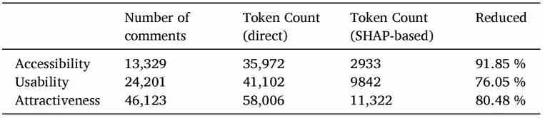
Table 5
Comparative analysis of keyword extraction.
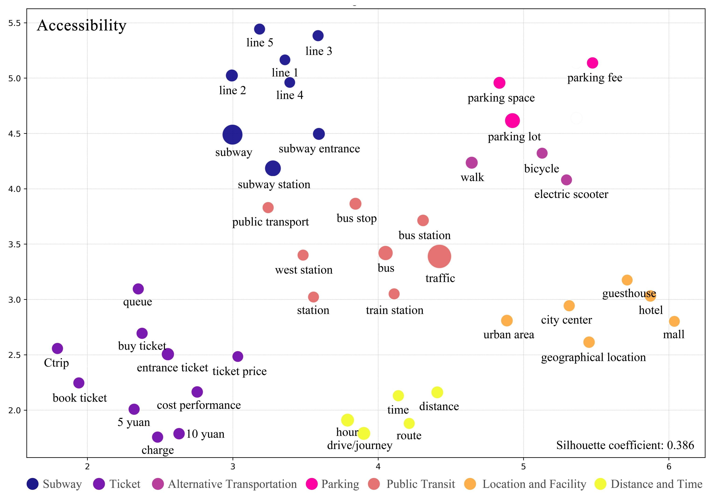
Figure 8
Clusters related to park accessibility.
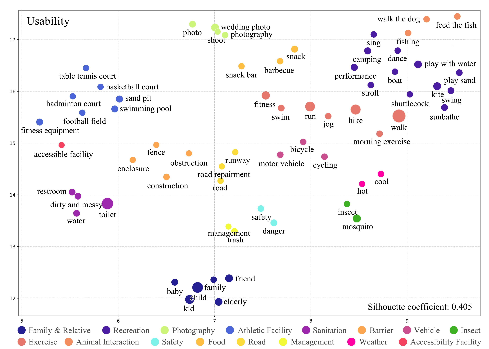
Figure 9
Clusters related to park usability.
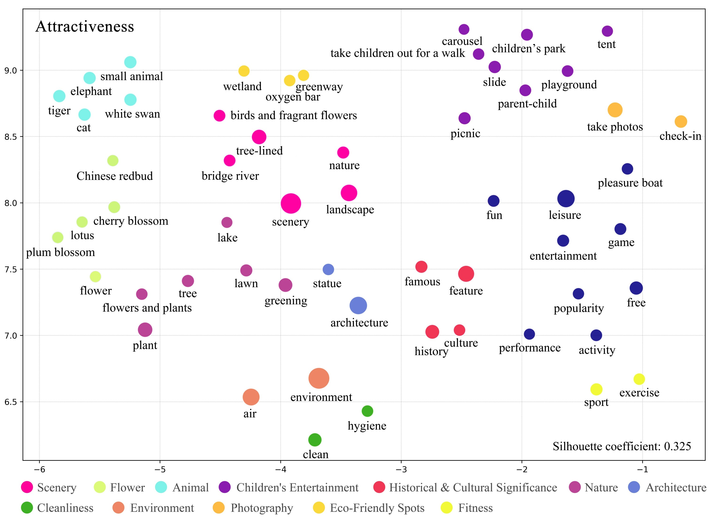
Figure 10
Clusters related to park attractiveness.
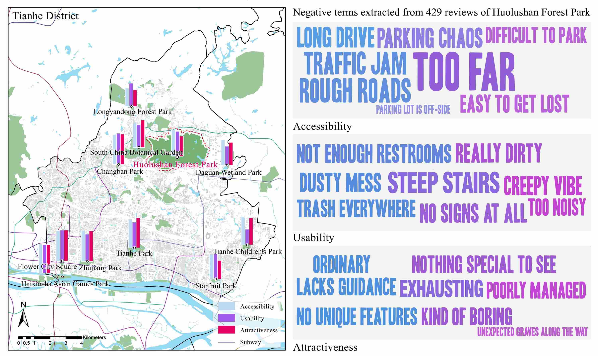
Figure 11
Negative lexicon in Huolushan Forest Park.